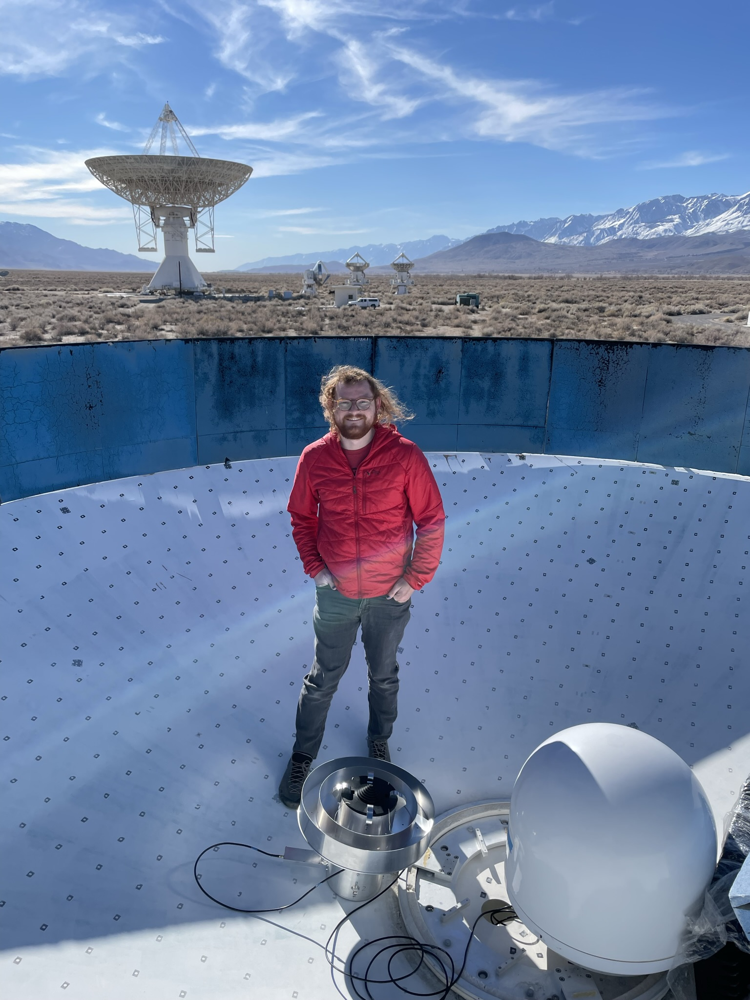
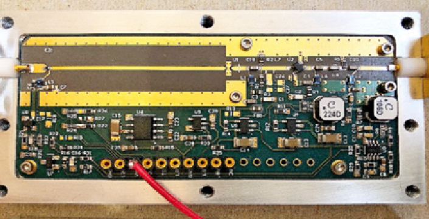
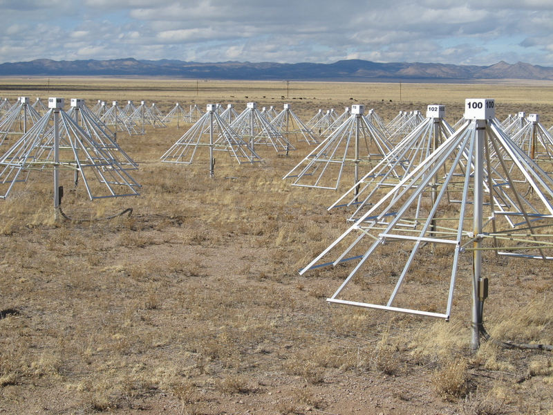
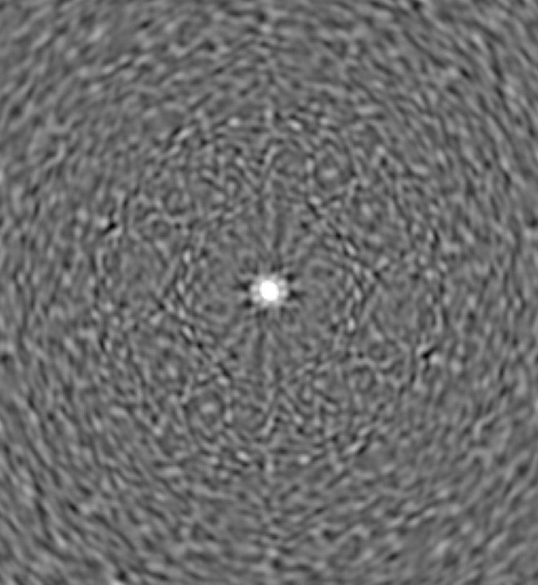

Radio Astronomy
Kiran Shila
Created: 2022-02-19 Sat 06:20
1. Introduction
1.1. Me

- EE PhD student @ Caltech
- Background in wireless engineering
2. How does a radio telescope work?
2.1. Noise
Astronomical objects are blackbody sources
For low frequency, Raleigh-Jeans (\(h\nu \ll kT\)), spectral brightness is \(B_{\nu}(T) \approx \frac{2kT}{\lambda^{2}}\) (linear with temp)
2.2. Space Noise
The radio emission from (most) astronomical sources is a stationary random process. (long timescales == steady mean power)
This noise is indistinguishable from thermal noise (like that of the system).
2.3. Noise Confusion
Every part of the system adds noise.
- Cosmic microwave background
- Galactic emission
- Thermal behavior of the ground
- Oxygen absorption
- Physical antenna temperature
- Receiver electronics
Total noise added by the system is the System Noise \(T_{s}\)
2.4. Radiometer
A radio telescope is a radiometer.
\(\sigma_{T} \approx \frac{T_{s}}{\sqrt{\Delta\nu t}}\)
Large bandwidths and integration time improve sensitivity
2.4.1. Example
If \(T_{s} \approx 30K\), and we observe for 5 seconds at 1 kHz of bandwidth: \(\sigma_{T} = 2*10^{-4}*T_{s}\)
If we want \(5\sigma\), that’s \(0.03K\) of sensitivity.
Consider Johnson-Nyquist noise power \(P = kT_{source}\delta \nu \approx 10^{-14}\) W
2.5. Receiver Design (my work)
The low noise amplifier (LNA) and antenna contribute the most to the system noise. I work primarily on world-class room temperature LNAs. 
3. Radio Interferometry and Aperture Synthesis
3.1. Big Telescope Hard
Rayleigh Criterion \(\theta \approx 1.22 \frac{\lambda}{D}\)
3.2. Arrays to the rescue
van Cittert Zernike (Statistical Optics) \(V \approx \iint I_{\nu}e^{-2i\pi(ul + vm)}dldm=F(I_{\nu}(l,m))\)
3.2.1. Long Wavelength Array

3.2.2. UV Coverage

3.2.3. Synthesized Beam

3.3. Compressed Sensing

3.4. Maximum Entropy
Reformulate the problem as constrained, non linear optimization \(S = -\Sigma I \log{\frac{I}{P}}\)
3.5. Solve in Julia
function regularize(model, prior, total_flux) entropy_loss = βent * entropy(model,prior) flux_loss = βflux * flux(model,total_flux) total_variance_loss = βtv * total_variance(model) return entropy_loss + flux_loss + total_variance_loss end Zygote.gradient(x -> regularize(x, prior, total_flux), model)
3.6. SgrA*

3.7. M87*